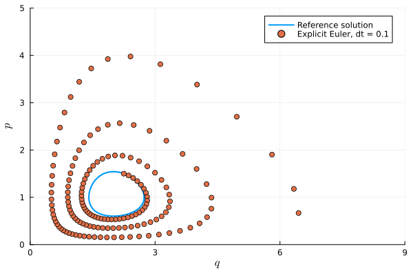
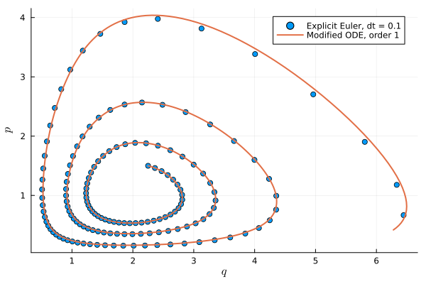
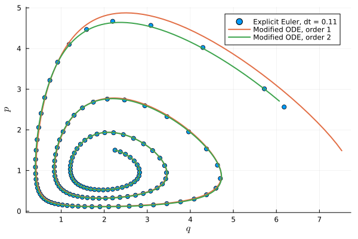
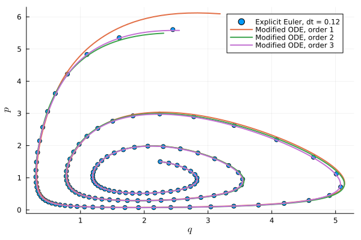
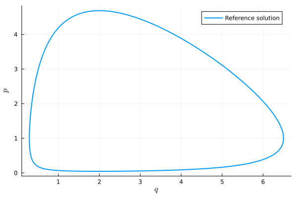
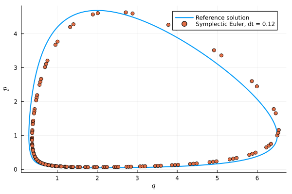
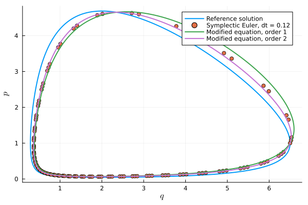
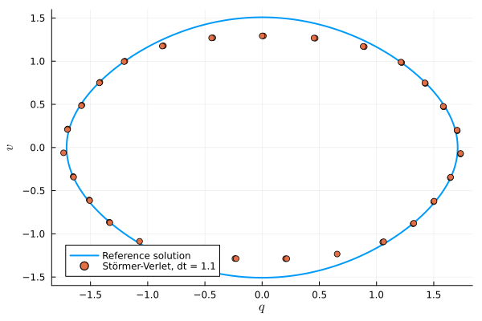
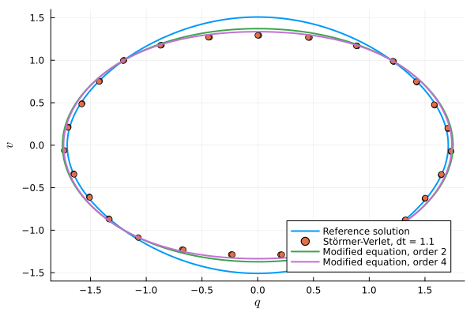

Modified equations
This tutorial describes the API of BSeries.jl related to the notion of modified equations. The main API entry point is the function modified_equation.
Given a first-order autonomous ordinary differential equation (ODE)
\[u'(t) = f(u(t))\]
and a B-series time integration method, the idea is to interpret the numerical solution with given time step size $h$ of the original ODE as the exact solution of the modified ODE
\[u'(t) = f_h(u(t)),\]
see for example [ChartierHairerVilmart2010].
Lotka-Volterra model, explicit Euler method
Here, we reproduce the example on p. 340 of [HairerLubichWanner2006]. Thus, we consider the explicit Euler method to solve the classical Lotka-Volterra model
\[p'(t) = (2 - q) p, \quad q'(t) = (p - 1) q.\]
First, we set up the ODE and compute some numerical solutions using OrdinaryDiffEq.jl.
using OrdinaryDiffEqfunction f!(du, u, params, t) p, q = u dp = (2 - q) * p dq = (p - 1) * q du[1] = dp; du[2] = dq return nothingendu0 = [1.5, 2.25]tspan = (0.0, 15.0)ode = ODEProblem(f!, u0, tspan)dt = 0.1sol_euler = solve(ode, Euler(), dt=dt)sol_ref = solve(ode, Tsit5())We use the in-place form of the right-hand side (RHS) and follow the Julia convention to indicate that f! modifies its first argument du by appending ! to its name. Thus, calling f!(du, u, params, t) will compute the RHS at the state u and time t (unused) and store the result in du. The argument params could be used to pass additional parameters explicitly, which we do not need in this case.
Next, we look at some phase space plots of the numerical solution.
using LaTeXStrings, Plotsfig = plot(xguide=L"$q$", yguide=L"$p$")default(linewidth=2)plot!(fig, sol_ref, idxs=(2, 1), label="Reference solution")scatter!(fig, last.(sol_euler.u), first.(sol_euler.u), label="Explicit Euler, dt = $dt")plot!(fig, xlims=(0.0, 9.0), ylims=(0.0, 5.0))
The exact solution of this problem is periodic, but the explicit Euler method produces an unstable trajectory. Here, we used an especially large time step to more clearly illustrate what will follow, but the qualitative behavior is the same for any time step size.
Next, we will derive the "modified equation" (see modified_equation) of the explicit Euler method and solve this new ODE to high accuracy. The perturbed system takes the form of a power series in the time step size dt, and in order to compute with it we will truncate it at a certain order.
Here, we use Symbolics.jl for the symbolic computations.
using BSeries, StaticArrays, Symbolicsfunction solve_modified_equation(ode, truncation_orders, dt) # Explicit Euler method A = @SMatrix [0//1;;] b = @SArray [1//1] c = @SArray [0//1] # Setup of symbolic variables @variables dt_sym u_sym = @variables p q # Create `f_sym` as a vector `similar` to `u_sym` to store symbolic expressions. # Then, call the in-place function `f!` to write the RHS to `f_sym`. f_sym = similar(u_sym); f!(f_sym, u_sym, nothing, nothing) sol_euler = solve(ode, Euler(), dt=dt) fig = plot(xguide=L"$q$", yguide=L"$p$") default(linewidth=2) scatter!(fig, last.(sol_euler.u), first.(sol_euler.u), label="Explicit Euler, dt = $dt") for truncation_order in truncation_orders series = modified_equation(f_sym, u_sym, dt_sym, A, b, c, truncation_order) series = Symbolics.substitute.(series, dt_sym => dt) modified_f, _ = build_function(series, u_sym, expression=Val(false)) modified_ode = ODEProblem((u, params, t) -> modified_f(u), ode.u0, ode.tspan) modified_sol = solve(modified_ode, Tsit5()) plot!(fig, modified_sol, idxs=(2, 1), label="Modified ODE, order $(truncation_order-1)") end figendfig = solve_modified_equation(ode, 2, dt)
The exact solution of the Lotka-Volterra model is periodic, but Euler's method generates a solution with growing amplitude. The modified equations accurately predict this.
Now we go to the next order and increase the time step size dt slightly.
fig = solve_modified_equation(ode, 2:3, 0.11)
Using a larger step size, we see that the first-order modified equations are not fully accurate, but by including the $O(h^2)$ terms we get much better accuracy at late times. Let's keep going.
fig = solve_modified_equation(ode, 2:4, 0.12)
Lotka-Volterra model, symplectic Euler method
Next, we reproduce the second part of the example on p. 340 of [HairerLubichWanner2006]. Thus, we consider the symplectic (IMEX) Euler method to solve the classical Lotka-Volterra model
\[p'(t) = (2 - q) p, \quad q'(t) = (p - 1) q.\]
Here, the implicit part will be applied to $p'$ and the explicit part to $q'$.
First, we set up the ODE and compute a reference solution using OrdinaryDiffEq.jl.
using OrdinaryDiffEq, Plots, LaTeXStringsfunction f!(du, u, params, t) q, p = u du[1] = (p - 1) * q # dq/dt du[2] = (2 - q) * p # dp/dt return nothingendu0 = [6.5, 1.0]tspan = (0.0, 15.0)ode = ODEProblem(f!, u0, tspan)sol_ref = solve(ode, Tsit5(), abstol=1.0e-9, reltol=1.0e-9)fig = plot(xguide=L"$q$", yguide=L"$p$")default(linewidth=2)plot!(fig, sol_ref, idxs=(1, 2), label="Reference solution")
Next, we apply a symplectic (implicit-explicit, IMEX) Euler method to this problem. Given an additively partitioned ODE
\[u'(t) = f^1(u) + f^2(u)\]
the symplectic/IMEX Euler method we are interested in is
\[\begin{aligned} y^1 &= u^n + \Delta t f^1(y^1), \\ u^{n+1} &= u^n + \Delta t f^1(y^1) + \Delta t f^2(y^1). \end{aligned}\]
There is an IMEXEuler method in OrdinaryDiffEq.jl. However, this is a multistep variant using the update
\[u^{n+1} = u^n + \Delta t f^1(u^{n+1}) + \Delta t f^2(u^n)\]
and not an additive Runge-Kutta method, see also OrdinaryDiffEq.jl#1590. Thus, we implement our own symplectic Euler method for this specific problem.
function imex_euler_lotka_volterra(u0, tspan, dt) @assert tspan[1] < tspan[2] @assert dt > 0 # setup solution arrays qs = [u0[1]] sizehint!(qs, round(Int, (tspan[2] - tspan[1]) / dt)) ps = [u0[2]] sizehint!(ps, length(qs)) t = tspan[1] while t < tspan[2] qold = qs[end] pold = ps[end] # ARK, p implicit pnew = pold / (1 + dt * (qold - 2)) qnew = qold + dt * (pnew - 1) * qold # ARK, q implicit #qnew = qold / (1 + dt * (1 - pold)) #pnew = pold + dt * (2 - qnew) * pold # Multistep version of Ascher, Ruuth, Wetton (1995), p implicit #qnew = qold + dt * (pold - 1) * qold #pnew = pold / (1 + dt * (qnew - 2)) # Multistep version of Ascher, Ruuth, Wetton (1995), q implicit #pnew = pold + dt * (2 - qold) * pold #qnew = qold / (1 + dt * (1 - pnew)) push!(qs, qnew) push!(ps, pnew) t += dt end return qs, psenddt = 0.12qs, ps = imex_euler_lotka_volterra(ode.u0, ode.tspan, dt)scatter!(fig, qs, ps, label="Symplectic Euler, dt = $dt")
The exact solution of this problem is periodic. Due to its structure-preserving properties, the symplectic Euler method also produces a stable trajectory.
Next, we will derive the modified equation of the symplectic Euler method and solve this new ODE to high accuracy. The perturbed system takes the form of a power series in the time step size dt, and in order to compute with it we will truncate it at a certain order.
Again, we use Symbolics.jl for the symbolic computations.
using BSeries, StaticArrays, Symbolicsex_euler = RungeKuttaMethod( @SMatrix([0]), @SVector [1])im_euler = RungeKuttaMethod( @SMatrix([1]), @SVector [1])ark = AdditiveRungeKuttaMethod([im_euler, ex_euler])@variables dt_symu_sym = @variables q, pf1_sym = [0, (2 - q) * p] # p implicitf2_sym = [(p - 1) * q, 0] # q explicitf_sym = (f1_sym, f2_sym)for truncation_order in 2:3 series_integrator = bseries(ark, truncation_order) series = modified_equation(f_sym, u_sym, dt_sym, series_integrator) series = Symbolics.substitute.(series, dt_sym => dt) modified_f, _ = build_function(series, u_sym, expression=Val(false)) modified_ode = ODEProblem((u, params, t) -> modified_f(u), ode.u0, ode.tspan) modified_sol = solve(modified_ode, Tsit5(), abstol=1.0e-9, reltol=1.0e-9) plot!(fig, modified_sol, idxs=(1, 2), label="Modified equation, order $(truncation_order-1)")endfig
Nonlinear pendulum, Störmer-Verlet method
Let's reproduce the example shown in Figure 4.1 of [HairerLubichWanner2003]. Thus, we consider the dynamical ODE system describing a nonlinear pendulum as
\[q'(t) = v, \quad v'(t) = -\sin(q).\]
Note that [HairerLubichWanner2003] use the order q, v of the variables (position and velocity) but OrdinaryDiffEq.jl requires the order v, q for dynamical ODE systems. Thus, we need to reverse the order of variables from time to time.
First, we set up the ODE system and compute a reference solution as well as the numerical solution obtained by the classical Störmer-Verlet method.
using OrdinaryDiffEq, LaTeXStrings, Plotsf1(v, q, params, t) = -sin(q)f2(v, q, params, t) = vv0 = 1.0q0 = -1.2tspan = (0.0, 55.0)ode = DynamicalODEProblem(f1, f2, v0, q0, tspan)dt = 1.1alg = VerletLeapfrog()sol_baseline = solve(ode, alg, dt=dt)sol_ref = solve(ode, Tsit5(), abstol=1.0e-9, reltol=1.0e-9)fig = plot(xguide=L"$q$", yguide=L"$v$")default(linewidth=2)plot!(fig, sol_ref, idxs=(2, 1), label="Reference solution")scatter!(fig, last.(sol_baseline.u), first.(sol_baseline.u), label="Störmer-Verlet, dt = $dt")
The exact solution of this problem is periodic. Since the Störmer-Verlet method is symplectic, it captures this qualitative property of the exact solution very well. However, we can see that the numerical solution trajectory does not really match the reference solution. Indeed, numerical errors pollute the solution and the numerical approximation is closer to a solution of a modified equation. We can compute the first terms of this modified equations as follows. First, we need to set up the time integration method in a form usable by BSeries.jl. For this, we interpret it as an additive Runge-Kutta method as follows.
using BSeries# Störmer-Verlet method written as an additive RK method, see# Hairer, Lubich, Wanner (2002)# Geometric numerical integration# Table II.2.1As = [ [0 0; 1//2 1//2], [1//2 0; 1//2 0]]bs = [ [1//2, 1//2], [1//2, 1//2]]ark = AdditiveRungeKuttaMethod(As, bs)AdditiveRungeKuttaMethod{Rational{Int64}} with methods
1. RungeKuttaMethod{Rational{Int64}} with
A: 2×2 Matrix{Rational{Int64}}:
0 0
1//2 1//2
b: 2-element Vector{Rational{Int64}}:
1//2
1//2
c: 2-element Vector{Rational{Int64}}:
0
1
2. RungeKuttaMethod{Rational{Int64}} with
A: 2×2 Matrix{Rational{Int64}}:
1//2 0
1//2 0
b: 2-element Vector{Rational{Int64}}:
1//2
1//2
c: 2-element Vector{Rational{Int64}}:
1//2
1//2
Next, we can set up the symbolic part. Note that we use the order q, v here instead of v, q used above.
using Symbolics# Set up symbolic equation@variables dt_symu_sym = @variables q, vfq_sym = [f2(reverse(u_sym)..., nothing, nothing), 0]fv_sym = [0, f1(reverse(u_sym)..., nothing, nothing)]f_sym = (fq_sym, fv_sym)# Compute B-series of the numerical integrator and the modified equationseries_integrator = bseries(ark, 3)series = modified_equation(f_sym, u_sym, dt_sym, series_integrator)@show series[1]@show series[2]series[1] = v + (1//6)*(dt_sym^2)*v*cos(q)
series[2] = -sin(q) + (1//12)*(dt_sym^2)*sin(q)*cos(q) + (1//12)*(dt_sym^2)*(v^2)*sin(q)You can compare this result to eq. (4.8) of [HairerLubichWanner2003]. Next, we can solve the modified differential equations with high precision as follows.
for truncation_order in 3:2:5 local series_integrator = bseries(ark, truncation_order) local series = modified_equation(f_sym, u_sym, dt_sym, series_integrator) series = Symbolics.substitute.(series, dt_sym => dt) modified_f, _ = build_function(series, u_sym, expression=Val(false)) modified_ode = ODEProblem((u, params, t) -> modified_f(u), [q0, v0], ode.tspan) modified_sol = solve(modified_ode, Tsit5(), abstol=1.0e-9, reltol=1.0e-9) plot!(fig, modified_sol, idxs=(1, 2), label="Modified equation, order $(truncation_order-1)")endfig
You can see that the high-precision solutions of the modified equations match the numerical solution obtained by the Störmer-Verlet method very well. In fact, the fourth-order modified equation is even a bit more accurate than the second-order one.
Modified equation of the average vector field method
Here, we reproduce Example 1 of [CelledoniMcLachlanOwrenQuispel2010]. First, we create the B-series of the average vector field method as described in the tutorial on creating B-series.
using BSeriesseries = bseries(5) do t, series if order(t) in (0, 1) return 1 // 1 else v = 1 // 1 n = 0 for subtree in SubtreeIterator(t) v *= series[subtree] n += 1 end return v / (n + 1) endendTruncatedBSeries{RootedTree{Int64, Vector{Int64}}, Rational{Int64}} with 18 entries:
RootedTree{Int64}: Int64[] => 1
RootedTree{Int64}: [1] => 1
RootedTree{Int64}: [1, 2] => 1//2
RootedTree{Int64}: [1, 2, 3] => 1//4
RootedTree{Int64}: [1, 2, 2] => 1//3
RootedTree{Int64}: [1, 2, 3, 4] => 1//8
RootedTree{Int64}: [1, 2, 3, 3] => 1//6
RootedTree{Int64}: [1, 2, 3, 2] => 1//6
RootedTree{Int64}: [1, 2, 2, 2] => 1//4
RootedTree{Int64}: [1, 2, 3, 4, 5] => 1//16
RootedTree{Int64}: [1, 2, 3, 4, 4] => 1//12
RootedTree{Int64}: [1, 2, 3, 4, 3] => 1//12
RootedTree{Int64}: [1, 2, 3, 4, 2] => 1//12
RootedTree{Int64}: [1, 2, 3, 3, 3] => 1//8
RootedTree{Int64}: [1, 2, 3, 3, 2] => 1//9
RootedTree{Int64}: [1, 2, 3, 2, 3] => 1//12
RootedTree{Int64}: [1, 2, 3, 2, 2] => 1//8
RootedTree{Int64}: [1, 2, 2, 2, 2] => 1//5Next, we compute the coefficients of its modified equation.
coefficients = modified_equation(series)TruncatedBSeries{RootedTree{Int64, Vector{Int64}}, Rational{Int64}} with 18 entries:
RootedTree{Int64}: Int64[] => 0
RootedTree{Int64}: [1] => 1
RootedTree{Int64}: [1, 2] => 0
RootedTree{Int64}: [1, 2, 3] => 1//12
RootedTree{Int64}: [1, 2, 2] => 0
RootedTree{Int64}: [1, 2, 3, 4] => 0
RootedTree{Int64}: [1, 2, 3, 3] => 0
RootedTree{Int64}: [1, 2, 3, 2] => 0
RootedTree{Int64}: [1, 2, 2, 2] => 0
RootedTree{Int64}: [1, 2, 3, 4, 5] => 1//80
RootedTree{Int64}: [1, 2, 3, 4, 4] => 1//90
RootedTree{Int64}: [1, 2, 3, 4, 3] => 1//360
RootedTree{Int64}: [1, 2, 3, 4, 2] => -1//180
RootedTree{Int64}: [1, 2, 3, 3, 3] => -1//120
RootedTree{Int64}: [1, 2, 3, 3, 2] => -1//90
RootedTree{Int64}: [1, 2, 3, 2, 3] => 1//180
RootedTree{Int64}: [1, 2, 3, 2, 2] => -1//360
RootedTree{Int64}: [1, 2, 2, 2, 2] => 0Remember that the coefficients of the B-series need to be divided by the symmetry of the rooted trees to get the final expressions.
References
Ernst Hairer, Christian Lubich, Gerhard Wanner (2003) Geometric numerical integration illustrated by the Störmer-Verlet method. DOI: 10.1017/S0962492902000144
Ernst Hairer, Christian Lubich, Gerhard Wanner (2006) Geometric Numerical Integration. DOI: 10.1007/3-540-30666-8
Philippe Chartier, Ernst Hairer, Gilles Vilmart (2010) Algebraic Structures of B-series. Foundations of Computational Mathematics DOI: 10.1007/s10208-010-9065-1
Elena Celledoni, Robert I. McLachlan, Brynjulf Owren, and G. R. W. Quispel (2010) Energy-preserving integrators and the structure of B-series. Foundations of Computational Mathematics DOI: 10.1007/s10208-010-9073-1